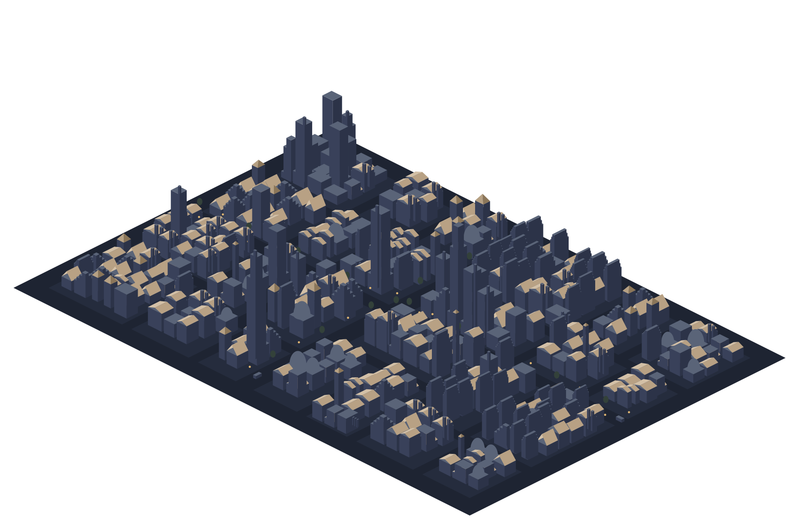

Rahmi Can Yamanoğlu
PhD Candidate in Economic Geography & Regional Science
Gran Sasso Science Institute
L'Aquila, Italy
About
My research examines the geography of innovation and how institutional and intellectual property frameworks shape innovation dynamics across regions. I focus in particular on inclusive forms of innovation and explore how diverse types of intellectual property rights can expand our understanding of innovation and its spatial dynamics.
Methodologically, I like experimenting with different approaches, combining econometric analysis and computational methods with large-scale IP and regional datasets to capture how innovation unfolds in place-specific and sector-specific ways.
The City
Every district is somewhere I lived, laid out west to east in the order I lived there. The landmarks are the institutions; the smaller towers are the things that happened alongside them. Drag to turn it, scroll to zoom, and click a marker to bring that district round.
